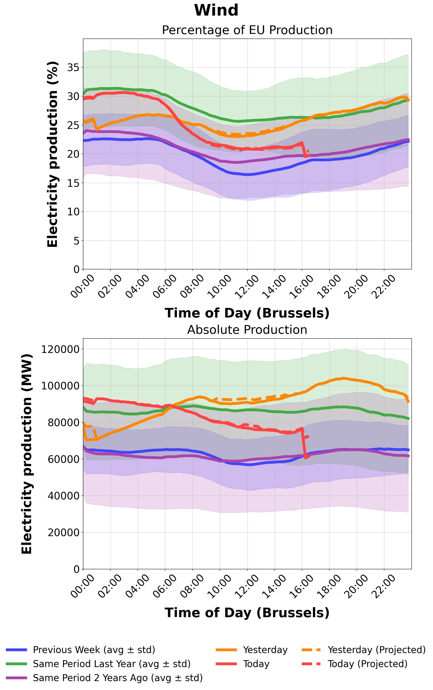
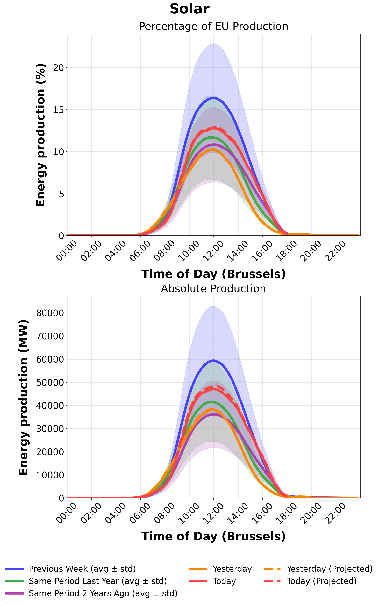

Live Intraday Analysis
15-minute resolution | Today vs Yesterday vs Historical
Updates: Every hour on GitHub Actions
Resolution: 15-minute intervals with 2-hour data quality cutoff
Note: Dashed lines show projected production including unreported countries
Wind Energy Production
Current day (solid) compared to yesterday and historical averages (dashed projections include missing countries)
Solar Energy Production
Current day (solid) compared to yesterday and historical averages (dashed projections include missing countries)
Total Renewable Energy Production

Current day (solid) compared to yesterday and historical averages (dashed projections include missing countries)
Technical Notes
- Data Source: ENTSO-E Transparency Platform API
- Coverage: All EU member states (projection system handles unreported countries)
- Time Zone: All data displayed in Europe/Brussels (CET/CEST)
- Units: Gigawatts (GW) for improved readability
- Projection System: Dashed lines estimate total production including countries with missing data